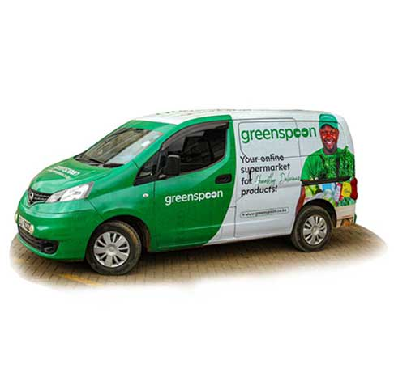
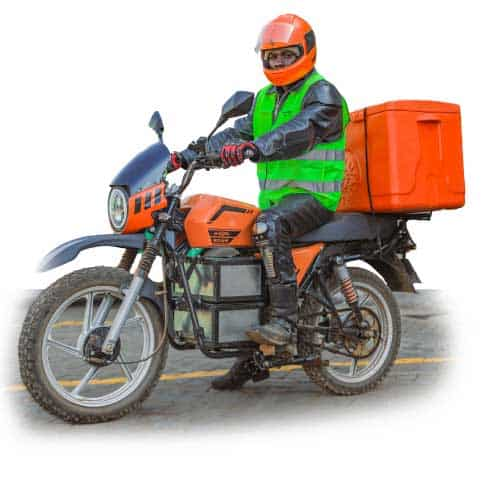
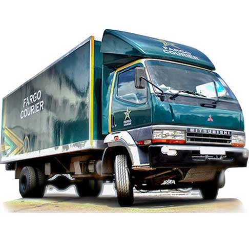

GreenSpoon is an online grocery store in Kenya that specializes in providing high-quality, sustainably sourced food products. It offers a wide range of items, from fresh organic produce to ethically raised meats and artisanal pantry staples. GreenSpoon prides itself on supporting local farmers and producers, ensuring that customers get the best while promoting sustainable practices. The platform is user-friendly, making it easy for customers to browse and order their favorite products, which are then delivered straight to their doorstep. With a focus on transparency and quality, GreenSpoon has become a trusted name for those seeking wholesome, environmentally conscious food options in Kenya.


